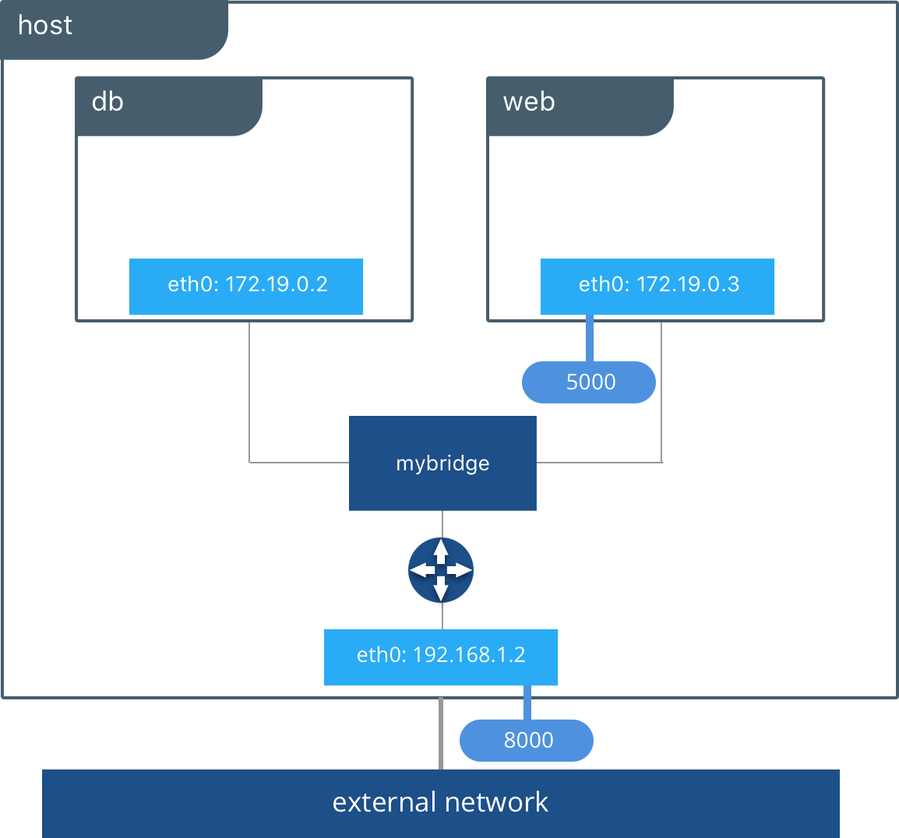

Docker is open platform for developing 💻 shipping and running application. Docker enables you to separate your applications from your infrastructure so you can deliver software quickly.
Docker Container allows you to package 📦 an application with all of its dependencies into a standardized unit for 💻 software development.
🬠Container Repository 🬠Private Repository 🬠Public Repository for Docker (DockerHub)
🬠Layers of Images 🬠Mostly Linux 🧠Based image, because small in size. 🬠Application image on top
Linux Windows Mac
The key difference between the two is in how they facilitate this isolation. VM 🥽 boots up its own guest OS. Therefore, it virtualized both the operating system kernel and the application layer. A Docker container 📦 virtualized only the application layer, and runs on top of the host operating system.
balwant@10.0.0.1:~$ docker pull
balwant@10.0.0.1:~$ docker run
balwant@10.0.0.1:~$ docker start
balwant@10.0.0.1:~$ docker stop
balwant@10.0.0.1:~$ docker ps
balwant@10.0.0.1:~$ docker exec -it
balwant@10.0.0.1:~$ docker logs

Docker Compose is software used for defining and 🃠running multi-container Docker applications. It can handle 🤠multiple containers simultaneously in the production, staging, 💻 development, 🧪 testing environment.
Volumes are useful for storing data that needs to persist even if the container 📦 is stopped or removed.